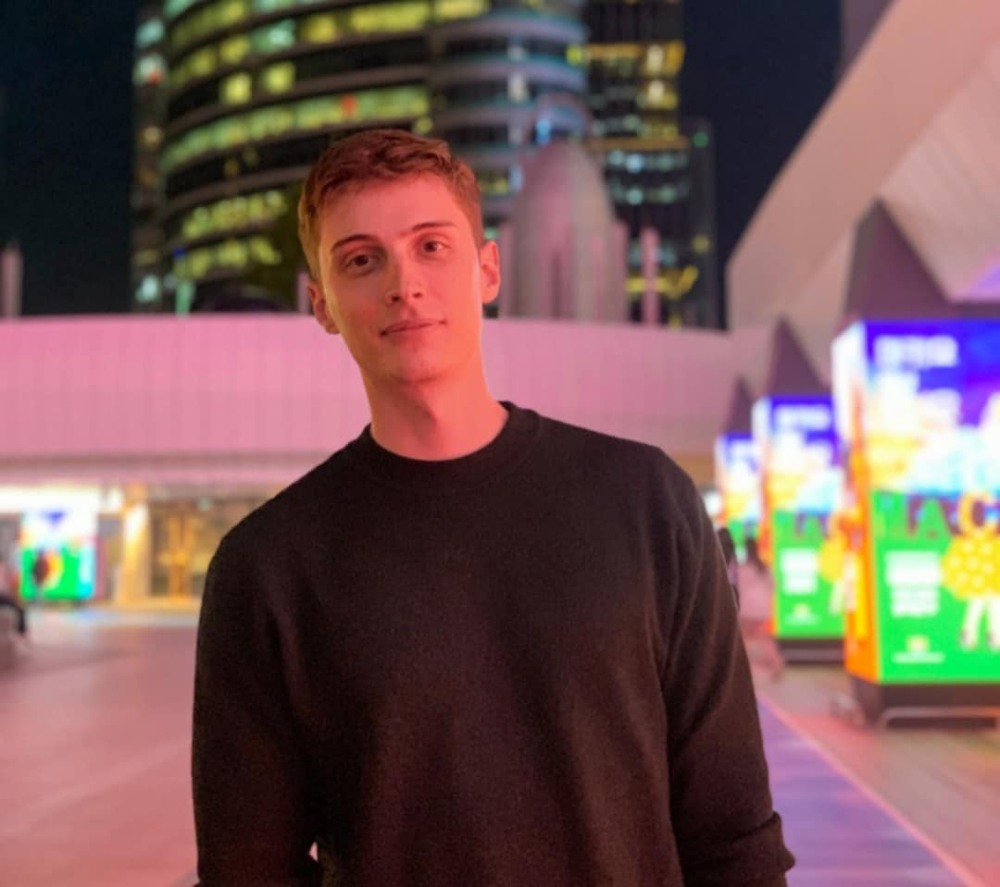

Cédric Caruzzo

AI Research Scientist at Lunit Inc.
Developing new methods for representation learning on large-scale, multimodal scientific data.
Developing new methods for representation learning on large-scale, multimodal scientific data.
My research is centered on building robust and efficient foundation models for visual understanding, especially in complex scientific domains. I am driven by the challenge of learning from large-scale, unlabeled data, using domains like digital pathology as a testbed. These gigapixel images provide a unique opportunity to develop scalable architectures and self-supervised methods that learn dense feature representations without direct supervision.
A primary goal of my work is to develop models that generalize effectively and can be fine-tuned to numerous downstream tasks with minimal data. This involves not only creating powerful visual learners but also exploring how to leverage multimodality. I have a strong interest in alignment—specifically, in designing frameworks that fuse and align unstructured visual data with structured modalities like genomics or chemical representations to build more comprehensive and predictive models of complex systems. Furthermore, I am deeply interested in ensuring that as these models scale, their learned objectives are robustly aligned with human intent, preventing unintended behaviors and ensuring reliable real-world performance.
Designing novel vision architectures and self-supervised learning objectives to train powerful foundation models on massive, unlabeled datasets, with a focus on computational and memory efficiency.
Developing methods to align dense visual representations with other data modalities (e.g., text, genomics, graphs) to enable zero-shot reasoning and unlock more powerful predictive capabilities.
Investigating techniques like parameter-efficient fine-tuning (PEFT) and domain adaptation to ensure that large pre-trained models can be quickly and effectively applied to a wide range of specialized downstream tasks.
Moving beyond simple objective functions to ensure model behavior is robustly aligned with the true, often nuanced, goals of a task. This includes exploring preference learning methods to build more predictable and trustworthy AI systems.
Applying these core principles to challenging, high-impact scientific domains like digital pathology and high-content screening to accelerate discovery and build more reliable systems.
| Project / Contribution | Description |
|---|---|
| Foundation Model for Cell Painting (CellPainTR) |
A novel contrastive learning framework to explicitly disentangle biological signals from nuisance variables (batch effects) in high-content imaging.
Transformers, Self-Supervised Learning
|
| Mitigating Racial Bias in Face Age Progression |
An investigation into fairness for generative models. We modified a StyleGAN-based age progression model (SAM) to mitigate racial bias by incorporating a race classifier into the training process, promoting more equitable transformations across demographics.[Blog]
Generative Models, Fairness in AI, StyleGAN, Computer Vision
|
I'm always interested in discussing new ideas in multimodal learning and self-supervision. I'm keen to connect with students and researchers working on similar problems. Don't hesitate to get in touch via [Email].